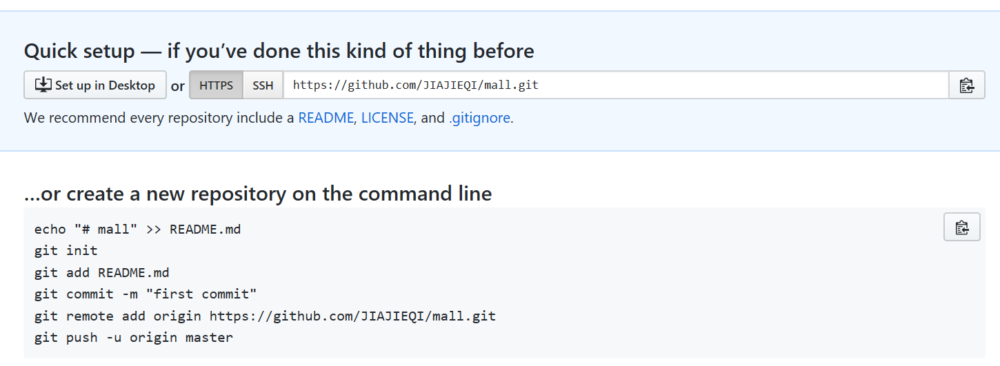
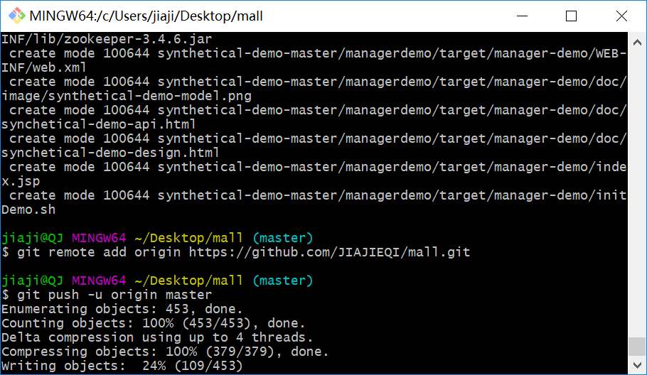
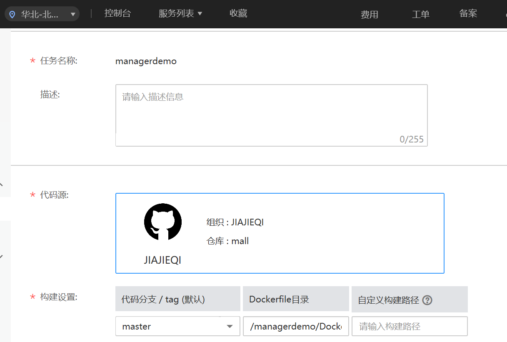
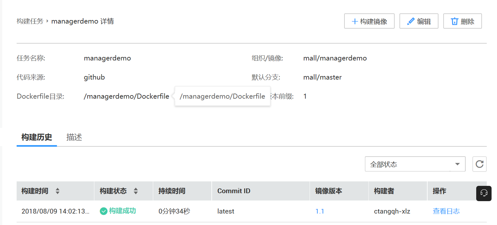
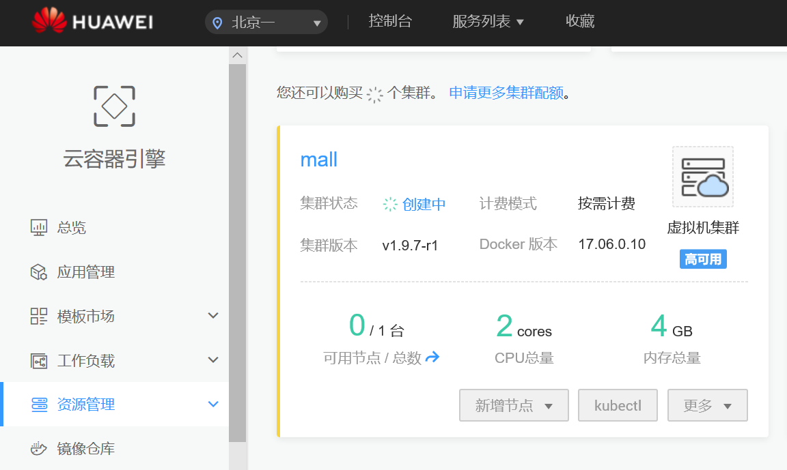
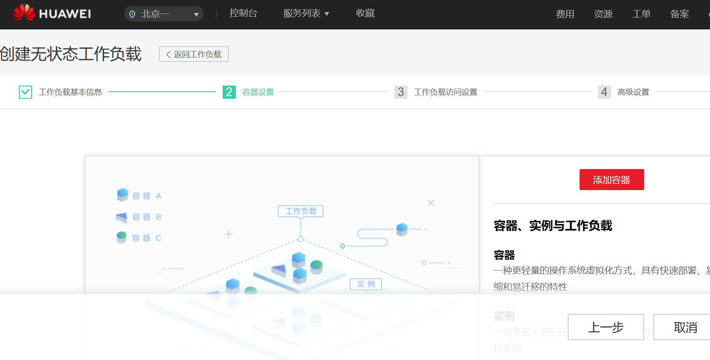
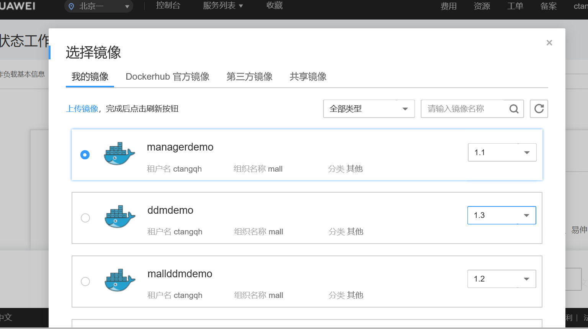

登录github，新建repository

上传本地代码到github新建repository，输入如下命令： git init git add . git commit -m "first commit" git remote add origin https://github.com/JIAJIEQI/mall.git //注意：https://github.com/JIAJIEQI/mall.git为自己创建repository所获取地址 git push -u origin master 登录华为云账号，点击进入容器镜像服务SWR，立即使用，选择镜像构建，源码托管，绑定GitHub账号 构建镜像，源代码中必须有Dockerfile文件  二、部署说明
进入华为云云容器引擎 CCE 服务，创建Kubernetes集群，创建工作负载，添加容器，选取上一步构建的镜像
  